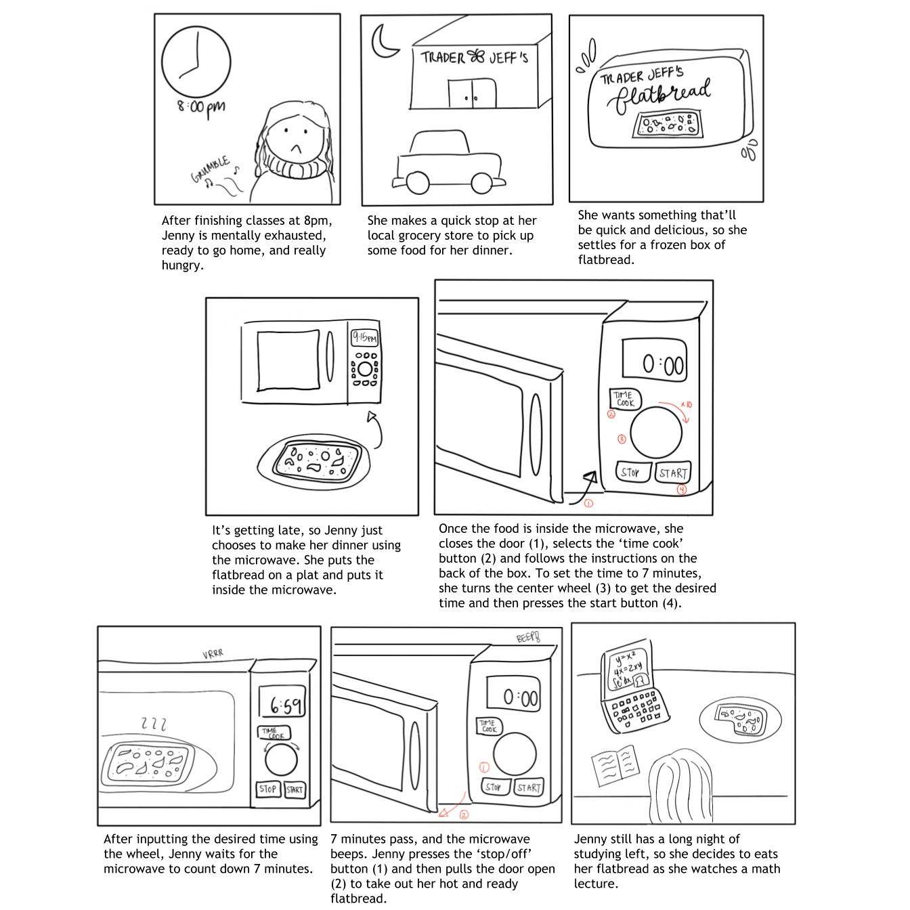

How do we gather information about how different people interact with certain objects?
At the beginning of my UI/UX course, we learned about different methods of gathering research about user experiences. For this project, we were to choose an interface that could be improved and observe users in order to develop personas and a storyboard around that interface.
I chose to observe people's interactions with a microwave in my home because it's a commonly used item and has a relatively complex interface. The following image is a sketch of its controls with a few notes.
As shown above, the interface provides various ways to use and control the microwave. The key components involve a start/pause and a clear/off button, along with various other buttons for different modes, such as “popcorn” and “defrost”.
After observing 3 people use the microwave, I've noticed:
Then, I asked my 3 users the following questions with the following summarized responses:
Using the data collected during my observations and interviews, I constructed 2 personas with empathy maps that describe what they think, feel, say, and do.
The first persona I constructed was Jason. Jason is the parent of a college-aged kid, nearing his 60s. His wife goes to work during the day, but since he works from home, he now has to do a lot more cooking. He’s definitely more experienced with using more traditional means of cooking and heating food as he’s not well-versed in navigating the microwave’s interface.
He struggles with the microwave interface because of the overwhelming number of choices and finds the wheel in the middle confusing to use.
Jason represents the older users of the microwave interface and those who tend to incorporate the microwave as a part of the cooking process, instead of solely relying on it. These users may have more varied uses for the microwave, such as defrosting ingredients and boiling water.
The second persona I constructed was Jenny. Jenny is a college-aged student taking classes full-time and involved with quite a few clubs. She doesn’t really enjoy cooking.
Jenny primarily uses the microwaves to prepare meals quickly, such as frozen dumplings from Trader Joe’s. Her main problem with the current interface is that she only really ever uses the ‘time cook’ function, but it’s quite inconvenient for longer amounts.
Jenny represents the younger users that enjoy and are accustomed to microwaveable foods. A lot of people, like Jenny, tend to use the microwave because they want to be quick and efficient. These types of users want to streamline the process and get to their desired result as easily as possible.
Finally, using Jenny as the main persona, I created the following storyboard that provides context and shows how she would interact with the microwave:
This project allowed me to practice collecting observations and showed me how difficult it was to create good interview questions. In particular, it was hard to ask unbiased questions that revealed deeper insights.
In general, I've learned that it's really important to consider the different contexts in which people use a specific interface and think about how a person's background influences their interactions. This project allowed me to get a better understanding of a user's mental model, become more empathetic, and think about how specific improvements would improve a person's experience.